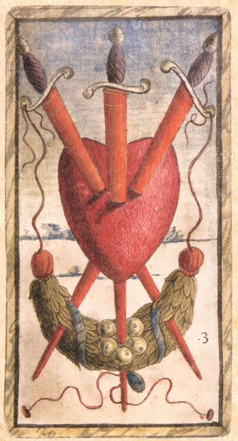
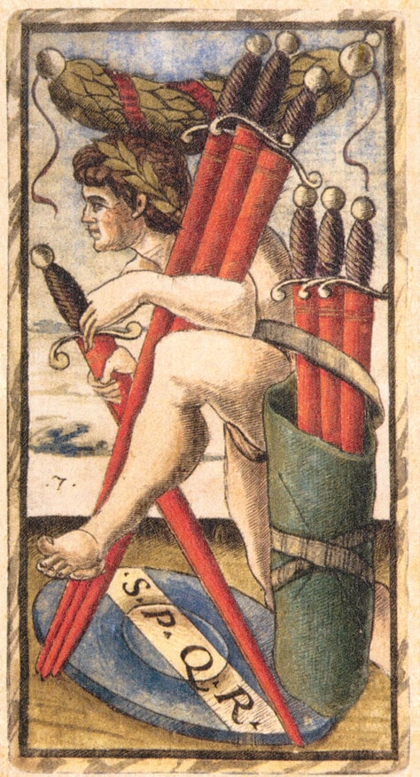
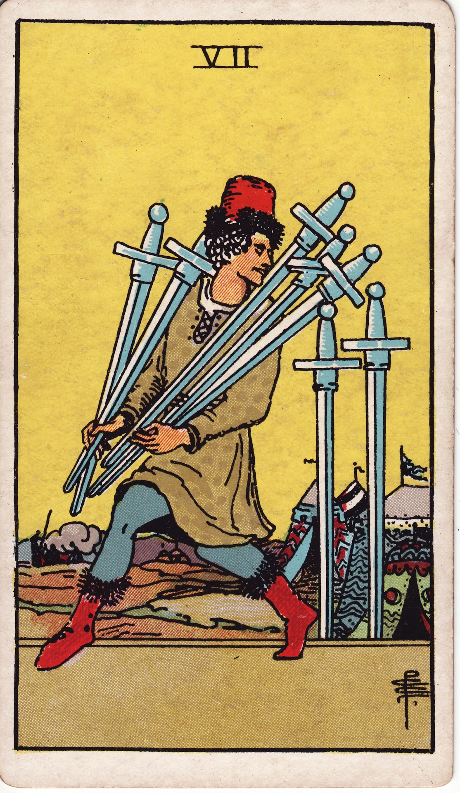

Lesson 05 · Tarot
Why the Seven of Swords Shows a Thief
Lesson 4's formula claimed the number cards could be computed from number and suit, and one card refused to play along. This lesson follows that card back through its ancestors, and what turns up changes how you read all forty.
By the end of this page you can name the separate traditions a minor card's meaning actually descends from, walk the Seven of Swords through every one of them from the 1780s to today, and read any number card with the rule that follows: the number sets the stage, the picture owns the plot.
This card breaks lesson 4's own drill. The formula says seven is "a possible result" — success within reach but not secured — and Swords is the suit of mind and words, so you predict some effort of thought or argument that will not quite hold. Then you turn the card over and find, in Waite's own description, "a man in the act of carrying away five swords rapidly; the two others of the card remain stuck in the ground. A camp is close at hand." Nobody reasons their way from a Sephira to that tiptoeing figure, and if the combination left you dumbfounded, the fault was in the claim rather than in your reasoning. The formula is one of this card's ancestors, not its only source, and the earlier version of lesson 4 claimed more for it than the evidence supports. This page is the correction, built from the sources.
The one-sentence version of what the research shows comes from the historian-run site Tarot Heritage: the minor arcana images are "a hodge-podge of influences from Etteilla, the Golden Dawn's Book T, the 15th century Sola Busca deck in the British Museum, and Smith's own imagination." That is four sources, and lesson 4 taught you exactly one of them. The rest of this page walks through the others, oldest first.
Ancestor one · the fortune-tellers' word-list (1780s)
A century before the Golden Dawn existed, the Paris print-seller who wrote under the name Etteilla published divinatory meanings for every card in the pack — the first person we know of to do it systematically. His lists were plain fortune-telling vocabulary, with no Tree of Life anywhere in sight, and they proved remarkably durable: in 1888 MacGregor Mathers (the same Mathers who would co-write Book T) put out a little book of card meanings and admitted in it that his lists were "chiefly taken from Etteilla." His entry for our card reads, in full: "Seven of Swords — Hope, Confidence, Desire, Attempt, Wish; R. Wise Advice, Good Counsel, Wisdom, Prudence, Circumspection."
In the Pictorial Key of 1911, under the very picture of the thief, Waite prints: "Design, attempt, wish, hope, confidence; also quarrelling, a plan that may fail, annoyance," with "good advice, counsel, instruction" for the reversal. That is Mathers' Etteilla list again, nearly word for word, and Waite even grumbles under it that "the significations are widely at variance with each other" — the natural result of inheriting a word-list instead of deriving one. So the man who directed the deck's imagery filled its companion book largely from the older fortune-telling tradition.
All three texts are dated and public: Mathers' 1888 meanings, with his "chiefly taken from Etteilla" admission; Waite's 1911 Seven of Swords page. The resemblance has also been counted: James Revak's card-by-card comparison found that 49% of Waite's divinatory meanings strongly match the Etteilla school's, against single digits traceable to anywhere else.
Ancestor two · the formula you already know (1888)
Book T, meanwhile, gives the card the title Lord of Unstable Effort and a gloss that opens: "Partial success, yielding when victory is within grasp, as if the last reserves of strength were used up." That is lesson 4's number-times-suit-times-decan formula at work, and it does describe something true about the final picture — five swords taken, two left behind, no time to stay. The same gloss also holds a stranger detail: among the card's secondary traits Book T lists a character "given to detect and spy on another, inclined to betray confidences." So the sneak does appear in the doctrine, but only in its small print, while the headline says something else.
Title and gloss are from Book T's small-cards section (full text). The curious fact for your purposes is negative: Waite the initiate, who knew this document, printed almost none of it — his published meanings follow ancestor one. The two 1888 streams ran side by side without mixing, even inside one man's book.
Ancestor three · the painter and a deck from 1491
Pamela Colman Smith produced the whole deck in a matter of months in 1909 — "a big task of 80 illustrations for a very small payment," as she put it in a letter that November, counting the card back among her designs. How much direction she got is documented unevenly. Waite claims general supervision in the Pictorial Key ("under my supervision — in respect of the attributions and meanings"), and in his memoir he describes card-by-card coaching only for trumps — Smith "had to be spoon-fed carefully over the Priestess Card, over that which is called the Fool and over the Hanged Man." No such sentence exists for the fifty-six suit cards, and the often-repeated line that he left her "to her own devices" on the minors is a modern paraphrase rather than anything Waite wrote. What we can do instead is look at where her compositions came from, and for several of them the trail leads to a single object: the Sola Busca, an Italian deck engraved around 1491 and the only fully illustrated tarot to survive from the Renaissance. Photographs of the complete deck had entered the British Museum — where Waite was a regular — two years before Smith sat down to draw. Put the two decks side by side and judge for yourself:




The access is on paper: the British Museum's own 1910 catalogue of early Italian engravings records that "the descriptions which follow are largely made from the reproductions presented to the Museum by Count Sola in 1907," photographs of the complete deck registered on 23 October 1907 (A. M. Hind, Catalogue of Early Italian Engravings, 1910, pp. 257–266). That Smith actually studied them is inference, not record — no letter or reading-room slip survives — but the careful scholars accept it; K. F. Jensen's judgement is that "it is evident that part of her inspiration for the minor arcana came from them" (The Early Waite-Smith Tarot Editions, 2005). A fuller gallery of side-by-side pairs, graded from exact to loose, is at waitesmith.org.
So the thief came neither from the Tree of Life nor from Waite's word-list. Smith took him from a Renaissance engraving, perhaps because he let her stage Book T's "unstable effort" and its small-print spy in a single figure — though that "perhaps" is inference, not document; the documents give us the 1491 image, the 1909 image, and the resemblance between them. The borrowing is not unique either: the bent man hauling his load on lesson 3's Ten of Wands descends the same way, and from a Sola Busca Swords card at that — Smith borrowed the figure and reassigned his suit.
And a fourth ancestor · the readers (1970 to now)
The last hand belongs to the readers who came after 1909. When tarot boomed in America, Eden Gray's A Complete Guide to the Tarot (1970) became the book a generation learned from, and her entry for this card pulls every earlier tradition into one paragraph: "A plan that may fail. An unwise attempt to make away with what is not yours. Unstable effort. Arguments over plans. Spying on another. Partial success." Inside it you can spot Waite's plan that may fail, Book T's unstable effort and its small-print spying — plus one new sentence of her own, which simply reads the picture as theft. Fifty years later the mainstream keyword sites keep almost nothing else: Biddy Tarot opens with "betrayal, deception, getting away with something." By now the picture has almost entirely replaced the formula.
| Date | Source | What the Seven of Swords means there |
|---|---|---|
| 1780s | Etteilla's school, via Mathers 1888 | "Hope, Confidence, Desire, Attempt, Wish" |
| c. 1888 | Book T (Golden Dawn) | Lord of Unstable Effort — "partial success, yielding when victory is within grasp"; spying in the small print |
| 1909 | Smith's picture | A man stealing away from a camp with five swords, two left behind — composition after Sola Busca, c. 1491 |
| 1911 | Waite, Pictorial Key | "Design, attempt, wish, hope, confidence; also quarrelling, a plan that may fail" |
| 1970 | Eden Gray | "An unwise attempt to make away with what is not yours. Unstable effort… Spying on another. Partial success." |
| Today | Mainstream keyword sites | Betrayal, deception, getting away with something |
The table shows a meaning being assembled over two centuries. Nothing in it was excavated from antiquity: each line was asserted by somebody, on a date, and the assertions do not even agree. That is also the best justification so far for this course's habit of keeping every claim labelled.
The rule this leaves you with
Rachel Pollack, the most respected teacher in the RWS lineage, drew the practical conclusion decades ago: the scenes "free us from the formulas that dominated the suit cards for so long," she wrote in Seventy-Eight Degrees of Wisdom, and for some cards "the picture almost contradicts the meaning" Waite printed under it. Her summary of what Smith accomplished is the best one-liner in the literature: "Pamela Smith has given us something to interpret."
The reading method this course now teaches follows her advice, in three steps. The suit still names the conversation, and the number still sets the stage and the stakes — everything true in lesson 4 stays true as a scaffold, and the five-to-six turn will never mislead you. The plot, however, belongs to the picture: describe the scene as if pausing a film, because the scene is what the deck actually publishes and the one piece of evidence you can point to across the table. When formula and picture disagree, the picture wins and the number still sets the stakes. On our card the two halves combine naturally: the scene gives you a man acting alone, taking what he can carry, hoping not to be noticed, and the seven adds that it is a possible result, not secured — five swords out of seven and no time to linger. "Getting away with something, maybe" appears in no table from lesson 4, and yet every piece of it is justified.
The cards that need this rule most
Divergence this sharp is the exception rather than the norm. For most of the forty, the card's own Book T title, the picture and the modern meaning pull together — the Eight of Cups' walker abandoning his cups really is "Abandoned Success", and the snowbound pair outside the lit window really are "Material Trouble". The short list below is where the sources pull apart; these cards are worth learning as named exceptions, picture first:
| Card | Book T's title says | The picture says (and modern readers follow it) |
|---|---|---|
| Seven of Swords | Unstable Effort | A thief leaving camp — deception, acting alone, getting away with it |
| Two of Swords | Peace Restored | A blindfolded stalemate — a decision refused, options held at arm's length |
| Four of Cups | Blended Pleasure | A cup offered and not taken — apathy, discontent with what is already had |
| Six of Swords | Earned Success | A ferry to the far shore — transition, moving on, trouble carried along |
| Six of Pentacles | Material Success | Alms weighed on scales — giving and receiving, and who holds the balance |
| Seven of Pentacles | Success Unfulfilled | A gardener resting mid-crop — patience, assessment, the long game |
Each row is checkable: Book T titles from the order's own text, pictures from Waite's card-by-card descriptions in the Pictorial Key, modern meanings surveyed across today's most-used references. The comparison table with verdicts — grown card by card as the course reaches them — lives in the new reference sheet Where a Minor Card's Meaning Comes From; print it and keep it with the deck map.
Do this now · with your deck
Fifteen minutes, number cards only.
- Read the case card properly. Pull the Seven of Swords and say the plot aloud as if describing a paused film — who is this man, what has he just done, what is he worried about. Then add the stage: a possible result, not secured. Feel the two halves click into "he might just get away with this."
- The two-pass drill. Shuffle the forty and flip five cards. For each, pass one is the plot — one literal sentence about what is happening in the scene, no keywords allowed. Pass two is the frame — suit's conversation, number's stage. Then one combined sentence. This ordering, picture before formula, is the permanent change from lesson 4's drill.
- Visit the exceptions. Pull the six cards from the table above, one at a time. Say what each picture claims before checking the table, and notice that you usually agree with the picture already — you have been reading these scenes correctly all along, and what needed correcting was the formula's claims.
- Hunt the borrowing. Put your Three of Swords next to the Sola Busca image on this page. Smith chose what to keep, and everything she added — the rain, the grey sky — is her own weather from lesson 3. Say aloud what the additions do to the borrowed heart.
- Again tomorrow. Rerun the two-pass drill on five new cards after a night's sleep, as always — the gap is what stores it.
Check yourself
One attempt per question, no scrolling back up.
Waite's printed meanings for the Seven of Swords — "design, attempt, wish, hope, confidence" — descend most directly from…
- Etteilla's fortune-telling school, via Mathers' 1888 list
- Book T's title, the Lord of Unstable Effort
- The scene Smith painted on the card itself
His list repeats Mathers' Etteilla-derived words nearly verbatim, upright and reversed, and shares no phrase with Book T. Revak's comparison found 49% of Waite's meanings strongly match the Etteilla school — the fortune-tellers' stream, not the Kabbalistic one.
The sneaking-man composition itself appears earliest in…
- The Sola Busca deck, engraved around 1491
- Pamela Colman Smith's designs of 1909
- The Golden Dawn's Book T, around 1888
The Italian engraving shows a figure making off with an armful of swords four hundred years before Smith drew hers — the plot predates every divinatory meaning ever attached to it.
Today's headline meaning — deception, getting away with something — was fixed for modern readers mainly by…
- Reading Smith's scene literally, from Eden Gray onward
- Following Book T's astrological decan assignments
- Reviving Etteilla's original word-list from Paris
Gray's 1970 guide added the sentence "an unwise attempt to make away with what is not yours" — the picture read as theft — and the keyword sites kept little else. The modern meaning is the scene, standardised.
When the picture and the formula disagree at the table, this course's rule is…
- The picture wins, and the number sets the stakes
- The formula wins, and the picture is decoration
- Neither wins, and the card should be redrawn
The scene is what the deck actually publishes and what you can point to across the table; the stage still tells you the stakes. The Seven of Swords becomes "getting away with something — maybe": plot from the picture, the maybe from the seven.
After this lesson, lesson 4's number-times-suit formula is best treated as…
- A scaffold that predicts the stage, never the scene
- A cipher that quietly generates all forty pictures
- A dead theory with no place in modern reading
The fives still break, the sixes still recover, the tens still complete — the arc holds as structure. What it never did was produce the plots, which have their own ancestors: Etteilla's lists, Sola Busca's engravings, Smith's staging, and the readers who came after.
Read this before the next lesson
Tarot Heritage — "The Rider Waite Smith Deck": the compact, historically careful account of how the deck was made and what fed the minor arcana. Then, if the Etteilla claim seems too large to take on trust, skim James Revak's comparative study — the card-by-card count behind the 49% figure. You now know enough to check him.
I am your teacher here — ask me things. This lesson corrected an overclaim you caught, so keep the pressure on. Some good ones to throw at me:
“Show me more Sola Busca borrowings — how many are there really?” · “Is Pollack right that the Two of Swords picture contradicts Waite's meaning?” · “What should I actually memorise for the six exception cards?” · “Who was Etteilla, and why did his list survive everything?” · “If meanings are this manufactured, what exactly am I doing when I read?”